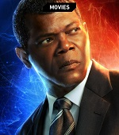
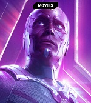
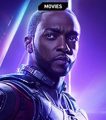
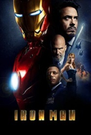
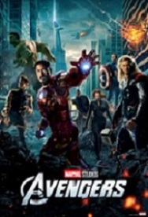
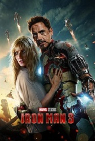
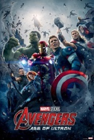
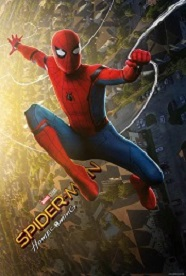
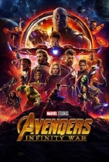
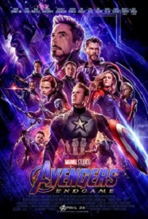

Iron Man is a fictional superhero appearing in American comic books published by Marvel Comics. The character was co-created by writer and editor Stan Lee, developed by scripter Larry Lieber, and designed by artists Don Heck and Jack Kirby. The character made his first appearance in Tales of Suspense #39 (cover dated March 1963), and received his own title in Iron Man #1 (May 1968).
Iron Man possesses powered armor that gives him superhuman strength and durability, flight, and an array of weapons. The armor is invented and worn by Stark (with occasional short-term exceptions). The weapons systems of the suit have changed over the years, but Iron Man's standard offensive weapons have always been the repulsor rays that are fired from the palms of his gauntlets. Other weapons built into various incarnations of the armor include: the uni-beam projector in its chest; pulse bolts (that pick up kinetic energy along the way; so the farther they travel, the harder they hit); an electromagnetic pulse generator; and a defensive energy shield that can be extended up to 360 degrees. Other capabilities include: generating ultra-freon (i.e., a freeze-beam); creating and manipulating magnetic fields; emitting sonic blasts; and projecting 3-dimensional holograms (to create decoys).
Powers and Abilities
- Wears modular arc reactor-powered Iron Man armor, granting superhuman strength & durability, the ability to fly & project Repulsor blasts
- Armor is also outfitted with complex tech, including a cutting-edge artificial intelligence, sophisticated sensor systems & other gadgetry
- Genius-level intellect, with particular aptitude in invention & engineering.
Allies
Captain America

War Machine

Nick Fury
Black Widow
Hulk
Thor

Vision
Spider Man
Doctor Strange

Falcon
Hawkeye
Wanda Maximoff
| NAME | FIRST APPEARANCE | ABILITIES |
|---|---|---|
| Captain America | Batman #1 (April 1940) | Criminal mastermind, expert chemist, utilizes weaponized props and toxins |
| War Machine | Batman #232 (June 1971) | Genius-level intellect, peak physical conditioning, superior strength and stamina, master martial artist and hand-to-hand combatant for centuries |
| Two face | Detective Comics #66 (August 1942) | Schizoid criminal mastermind obsessed with duality, extensive knowledge in law, experienced hand-to-hand combatant and detective |
| Bane | Batman: Vengeance of Bane 1 (January 1993) | Brilliant military strategist, trained mercenary, peak human physical conditioning, venom enhanced strength and durability |
| Black Mask | Batman #386 (August 1985) | Brilliant tactician and strategist, crime boss with powerful underworld connections, skilled marksman, advanced stamina and endurance |
Villains
| NAME | FIRST APPEARANCE | ABILITIES |
|---|---|---|
| Joker | Batman #1 (April 1940) | Criminal mastermind, expert chemist, utilizes weaponized props and toxins |
| Ra’s al Ghul | Batman #232 (June 1971) | Genius-level intellect, peak physical conditioning, superior strength and stamina, master martial artist and hand-to-hand combatant for centuries |
| Two face | Detective Comics #66 (August 1942) | Schizoid criminal mastermind obsessed with duality, extensive knowledge in law, experienced hand-to-hand combatant and detective |
| Bane | Batman: Vengeance of Bane 1 (January 1993) | Brilliant military strategist, trained mercenary, peak human physical conditioning, venom enhanced strength and durability |
| Black Mask | Batman #386 (August 1985) | Brilliant tactician and strategist, crime boss with powerful underworld connections, skilled marksman, advanced stamina and endurance |
Identity: Tony Stark
Tony Stark is an inventive genius whose expertise in the fields of mathematics, physics, chemistry, and computer science rivals that of Reed Richards, Hank Pym, and Bruce Banner, and his expertise in electrical engineering and mechanical engineering surpasses even theirs. He is regarded as one of the most intelligent characters in the Marvel Universe. He graduated with advanced degrees in physics and engineering at the age of 17 from Massachusetts Institute of Technology (MIT) and further developed his knowledge ranging from artificial intelligence to quantum mechanics as time progressed. His expertise extends to his ingenuity in dealing with difficult situations, such as difficult foes and deathtraps, in which he is capable of using available tools, including his suit, in unorthodox but effective ways.He is well respected in the business world, able to command people's attention when he speaks on economic matters, having over the years built up several multimillion-dollar companies from virtually nothing. He is noted for the loyalty he commands from and returns to those who work for him, as well as for his business ethics.
Movies

Iron Man
Iron Man
(2008)

Iron Man 2
(2010)

The Avengers
The Avengers
(2012)

Iron Man 3
Iron Man 3
(2013)

Avengers: Age of Ultron
Avengers: Age of Ultron
(2015)

Captain America: Civil War
(2016)

Spider-Man: Homecoming
Spider-Man: Homecoming
(2017)

Avengers: Infinity War
Avengers: Infinity War
(2018)

Avengers: Endgame